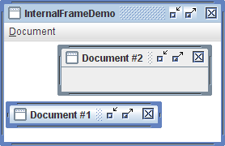

Lección: Usando Componentes Swing
Sección: Cómo Usar Varios Componentes
Cómo Usar Marcos Internos
Con la clase
JInternalFrame puede visualizar una ventana parecida a un
JFrame dentro de otra ventana. Usualmente, usted añade marcos internos
a un panel de escritorio. El panel de escritorio, a su vez, podría ser usando como el panel de contenidos de
un JFrame. El panel de escritorio es una instancia de
JDesktopPane,
la cual es una subclase de JLayeredPane que tiene una IPA añadida
para manejar múltiples marcos internos que se solapan.
Debe considerar cuidadosamente si basar la GUI de su programa en torno a marcos o marcos internos. Cambiar de marcos internos a marcos o viceversa no es necesariamente una tarea simple. Experimentando con ambos marcos y marcos internos, usted puede tener una idea de los compromisos involucrados en la elección de uno sobre el otro.
Aquí tiene una imagen de una aplicación que tiene dos marcos internos (uno de los cuales está iconificado) dentro de un marco regular:

Pruebe esto:
-
Pulse el botón Lanza para ejecutar InternalFrameDemo usando
Java™ Web Start (
descargue KDJ 7 o posterior). Alternativamente, para compilar y ejecutar el ejemplo por usted
mismo, consulte el
the índice de ejemplos.

-
Cree marcos internoos nuevos usando el item Create en el menú Document.
Cada marco interno surge 30 puntos más abajo y a la drecha del lugar donde el marco interno previo apareció primero. Esta funcionalidad es implementada en la claseMyInternalFrame, la cual es la subclase personalizada deJInternalFrame.
El siguiente código, tomado de
InternalFrameDemo.java, crea el panel de escritorio y los marcos internos en el ejemplo
previo.
...//En el constructor de InternalFrameDemo, una subclase de JFrame:
desktop = new JDesktopPane();
createFrame(); //Crea la primera ventana
setContentPane(desktop);
...
//Hacer arrastrar un poco más rápido pero quizás más feo.
desktop.setDragMode(JDesktopPane.OUTLINE_DRAG_MODE);
...
protected void createFrame() {
MyInternalFrame frame = new MyInternalFrame();
frame.setVisible(true);
desktop.add(frame);
try {
frame.setSelected(true);
} catch (java.beans.PropertyVetoException e) {}
}
...//En el constructor de MyInternalFrame, una subclase de JInternalFrame:
static int openFrameCount = 0;
static final int xOffset = 30, yOffset = 30;
public MyInternalFrame() {
super("Document #" + (++openFrameCount),
true, //redimensionable
true, //se puede cerrar
true, //se puede maximizar
true);//se puede iconificar (minimizar)
//...Crea el IGU y lo coloca en la ventana...
//...Entonces establece el tamaño de la ventana y llama a pack...
...
//Establece la ubicación de la ventana.
setLocation(xOffset*openFrameCount, yOffset*openFrameCount);
}
Marcos Internos vs. Marcos Regulares
El código para usar marcos internos es similiar en muchas formas al código para usar marcos regulares de Swing.
Debido a que los marcos internos tienen paneles raíz, configurar el IGU para un JInternalFrame es
muy similar a configurar el IGU para un JFrame. JInternalFrame también ofrece otra
IPA, tal como pack, que lo hace similar a JFrame.
Nota:
Al igual que para un marco regular, debe invocar setVisible(true) o show() sobre
un marco interno para visualizarlo. El marco interno no aparece hasta que usted explícitamente lo hace
visible.
Los marcos internos no son ventanas o contenedores de nivel superior, sin embargo, los hace diferentes de
los marcos. Por ejemplo, usted debe añadir un marco interno a un contenedor (usualmente un
JDesktopPane); un marco interno no puede ser la raiz de una jerarquía de contención. Además, los
marcos internos no generan eventos de ventana. En su lugar, las acciones de usuario que causarían a un marco el
disparar eventos de usuario causan que un marco interno dispare eventos del marco interno.
Debido a que los marcos internos son implementados con código independiente de la plataforma, añaden algunas características que los marcos no pueden darle. Una de tales características es que los marcos internos le dan más control sobre su estado y capacidades que los marcos. Puede iconificar (minimizar) programadamente un marco interno o maximizarlo. Puede también especificar qué icono se coloca en la barra del título del marco interno. Puede incluso especificar si el marco interno tiene las decoraciones de ventana que soportan el redimensionado, la minimización, el cierre, y la maximización.
Otra característica es que los marcos internos están diseñados para trabajar dentro de los paneles de
escritorio. La IPA de JInternalFrame contiene métodos tales como moveToFront que
funcionan sólo si el contendor del marco interno es un panel estructurado tal como un JDesktopPane.
Reglas de Uso de Marcos Internos
Si ha construído algunos programas usando JFrame y los otros componentes de Swing, entonces también
sabe un montón sobre cómo usar marcos internos. La siguiente lista resume las reglas para usar marcos internos.
Para información adicional, vea Cómo Hacer Marcos y
La Clase JComponent.
- Debe establecer el tamaño del marco interno.
-
Si no establece el tamaño del marco interno, éste tendrá un tamaño cero y por lo tanto nunca será visible.
Puede establecer el tamaño usando uno de los siguientes métodos:
setSize,pack, osetBounds. - Por regla general, debe establecer la ubicación del marco interno.
-
Si no establece la ubicación del marco interno, se colocará en 0,0 (a parte superior izquierda de su
contenedor). Puede usar el método
setLocationosetBoundspara especificar el punto superior izquierdo del marco interno, relativo a su contenedor. - Para agregar componentes a un marco interno, los agrega al panel de contenido del marco interno.
-
Esto es exactamente como la situación de
JFrame. Vea Añadir Componentes al Panel de Contenido para los detalles. -
Diálogos que son marcos internos deberán ser implementados usando
JOptionPaneoJInternalFrame, noJDialog. -
Para crear un diálogo simple, puede usar los métodos
showInternalXxxDialogde theJOptionPane, como se describió en Cómo Hacer Diálogos. - Debe añadir un marco interno a un contenedor.
-
Si no añade el marco interno a un contenedor (usualmente un
JDesktopPane), el marco intero no aparacerá. -
Necesita llamar a
showosetVisiblepara los marcos internos. -
Los marcos internos son invisibles por defecto. Debe invocar
setVisible(true)oshow()para hacerlos visibles. - Los marcos internos disparan eventos de marco interno, no eventos de ventana.
- El manejo de los eventos de marco interno es casi idéntico al manejo de eventos de ventana. Vea Cómo Escribir un Internal Frame Listener para más información.
Consejo de rendimiento:
Cuando un escritorio tiene muchos marcos internos, el usuario puede notar que moverlos parece lento. Arrastrar los contornos es una manera de evitar este problema. Con el arrastrado de contornos, sólo el contorno del marco interno es pintado en la posición actual del ratón mientras el marco interno está siendo arrastrado. El contenido del marco interno no se repinta en una nueva posición hasta que el arrastre se detiene. El comportamiento por defecto (llamado arrastre en vivo) es reposicionar y repintar parte o todo el marco interno continuamente mientras esta moviéndose; esto puede ser lento si el escritorio tiene muchos marcos internos.
Use el método setDragMode* de JDesktopPane para especificar el arrastre de
contorno. Por ejemplo:
desktop.setDragMode(JDesktopPane.OUTLINE_DRAG_MODE);
La IPA del Marco Interno
Las siguientes tablas listan los constructores y métodos más comunmente usados de JInternalFrame,
como también unos pocos métodos que ofrece JDesktopPane. Además de la IPA listada en esta sección,
JInternalFrame hereda IPA útil de sus superclases, JComponent, Component,
y Container. Vea La Clase JComponent para listas de métodos de esas
clases.
Como JInternalFrame, JDesktopPane desciende de JComponent, y así ofrece
los métodos descritos en La Clase JComponent. Debido a que
JDesktopPane extiende JLayeredPane, también soportar los métodos descritos en
La IPA del Panel Estratificado.
La IPA para usar marcos internos pertenece a estas categorías:
- Crear el marco interior
- Añadir componentes al marco interno
- Especificar la Visibilidad, Tamaño y Posición del Marco Interno
- Ejecutar Operaciones de Ventana en el Marco Interno
- Controlar Las Decoraciones y Capacidades de la Ventana
- Usar la IPA de JDesktopPane
| Constructor o Método | Propósito |
|---|---|
|
JInternalFrame()
JInternalFrame(String) JInternalFrame(String, boolean) JInternalFrame(String, boolean, boolean) JInternalFrame(String, boolean, boolean, boolean) JInternalFrame(String, boolean, boolean, boolean, boolean) |
Crea una instancia de JInternalFrame. El primer argumento especifica el título (si lo hay)
para ser visualizado por el marco interno. El resto de los argumentos especifican si el marco interno
debería contener decoraciones que permitan al usuario redimensionar, cerrar, maximizar, e iconificar el
marco interno (especificado en ese orden). El valor por defecto para cada argumento booleano es
false, el cual significa que la operación no está permitida.
|
|
static int showInternalConfirmDialog(Component, Object)
static String showInternalInputDialog(Component, Object) static Object showInternalMessageDialog(Component, Object) static int showInternalOptionDialog(Component, Object, String, int, int, Icon, Object[], Object) |
Crea un JInternalFrame que simula un diálogo. Vea
Cómo Hacer Diálogos para los detalles.
|
| Método | Propósito |
|---|---|
|
void setContentPane(Container)
Container getContentPane() |
Establece u obtiene el panel de contenido del marco interno, el cual generalmente contiene toda la IGU interna del marco, con la excepción de la barra de menús y las decoraciones de la ventana. |
|
void setJMenuBar(JMenuBar)
JMenuBar getJMenuBar() |
Establece u obtiene la barra de menú del marco interno. |
|
void setLayeredPane(JLayeredPane)
JLayeredPane getLayeredPane() |
Establece u obtiene el panel estructurado del marco interno. |
| Método | Propósito |
|---|---|
| void setVisible(boolean) |
Hace el marco interno visible (si true) o invisible (sifalse). Debe invocar
setVisible(true) sobre cada JInternalFrame antes de añadirlo a su contenedor.
(Heredado de Component).
|
| void pack() | Dimensiona el marco interno de forma que sus componentes tengan sus tamaños preferidos. |
|
void setLocation(Point)
void setLocation(int, int) |
Establece la posición del marco interno. (Heredado de Component).
|
|
void setBounds(Rectangle)
void setBounds(int, int, int, int) |
Establece explícitamente el tamaño y ubicación del marco interno. (Heredado de Component).
|
|
void setSize(Dimension)
void setSize(int, int) |
Establece explícitamente el tamaño del marco interno. (Heredado de Component).
|
| Método | Propósito |
|---|---|
|
void setDefaultCloseOperation(int)
int getDefaultCloseOperation() |
Establece u obtiene lo que marco interno hace cuando el usuario intenta "cerrar" el marco
interno. El valor por defecto es DISPOSE_ON_CLOSE. Otros valores posibles son
DO_NOTHING_ON_CLOSE y HIDE_ON_CLOSE. Vea
Responder a Eventos de Cierre de Ventana para los detalles.
|
|
void addInternalFrameListener(InternalFrameListener)
void removeInternalFrameListener(InternalFrameListener) |
Añade o elimina un oyente del marco interno (el equivalente de JInternalFrame de un oyente
de ventana). Vea
Cómo Escribir un Internal Frame Listener para más
información.
|
|
void moveToFront()
void moveToBack() |
Si el padre del marco interno es un panel estructurado tal cmo un panel de escritorio, mueve el marco interno al frente o atrás (respectivamente) de su capa. |
|
void setClosed(boolean)
boolean isClosed() |
Establece u obtiene si el marco interno está actualmente cerrado. El argumento a setClosed
debe ser true. Cuando reabra un marco interno cerrado, hágalo visibile y añádalo a un
contenedor (usualmente el panel de escritorio al que originalmente lo añadió).
|
|
void setIcon(boolean)
boolean isIcon() |
Iconifica o deiconifia el marco interno, o determina si está actualmente iconificado. |
|
void setMaximum(boolean)
boolean isMaximum() |
Maximiza o restaura el marco intero, o determina si está maximizado. |
|
void setSelected(boolean)
boolean isSelected() |
Establece u obtiene si el marco interno es el marco interno actualmente "seleccionado" (activado). |
| Método | Propósito |
|---|---|
|
void setFrameIcon(Icon)
Icon getFrameIcon() |
Establece u obtiene el icono visualizado en la barra de título del marco interno (usualmente en la esquina superior izquierda). |
|
void setClosable(boolean)
boolean isClosable() |
Establece u obtiene si el usuario puede cerrar el marco interno. |
|
void setIconifiable(boolean)
boolean isIconifiable() |
Establece u obtiene si el marco interno puede ser iconificado. |
|
void setMaximizable(boolean)
boolean isMaximizable() |
Establece u obtiene si el usuario puede maximizar este marco interno. |
|
void setResizable(boolean)
boolean isResizable() |
Establece u obtiene si el marco niterno puede ser redimensionado. |
|
void setTitle(String)
String getTitle() |
Establece u obtiene el título de ventana. |
| Constructor o Método | Propósito |
|---|---|
| JDesktopPane() | Crea una nueva instancia de JDesktopPane. |
| JInternalFrame[] getAllFrames() |
Devuelve todos los objetos JInternalFrame que el escritorio contiene.
|
| JInternalFrame[] getAllFramesInLayer(int) |
Devuelve todos los objetos JInternalFrame que el escritorio contiene y que están en la
capa especificada. Vea Cómo Usar Paneles Estratificados para información
sobre las capas.
|
|
void setDragMode(int)
int getDragMode() |
Establece u obtiene el modo de arrastre usado para los marcos internos en este escritorio. El enterio
puede ser JDesktopPane.LIVE_DRAG_MODE o JDesktopPane.OUTLINE_DRAG_MODE. El
valor por defeecto para la Apariencia de Java es el modo de arrastre en vivo.
|
Ejemplos que Usan Marcos Internos
Los siguientes ejemplos usan marcos internos. Debido a que los marcos internos son similares a los marcos regulares, debería mirar también en Ejemplos que Usan Marcos.
| Ejemplo | Dónde está escrito | Notas |
|---|---|---|
MyInternalFrame
|
Esta página. | Implemenmta un marco interno que aparece en un desplazamiento al marco interno creado previamente. |
InternalFrameDemo
|
Esta página. |
Le permite crear marcos internos (instancias de MyInternalFrame) que van dentro del
JDesktopPane de la aplicación.
|
InternalFrameEventDemo
|
Cómo Escribir un Internal Frame Listener | Demuestra cómo escuchar los eventos del marcos intenro. También demuestra el posicionamiento de los marcos internos dentro de unpanel escritorio. |